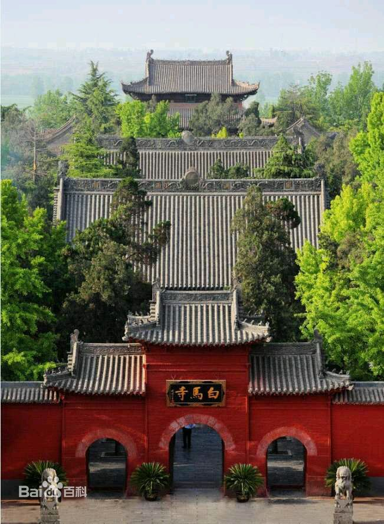
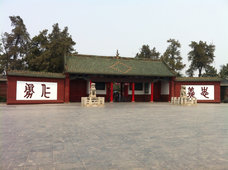

| 洛阳 luoyang | |||||||||||||||||||
| 白马寺 | |||||||||||||||||||
|  | 河南洛阳白马寺位于河南省洛阳老城以东12公里处，创建于东汉永平十一年（公元68年），为中国第一古刹，世界著名伽蓝，是佛教传入中国后兴建的第一座寺院，有中国佛教的“祖庭”和“释源”之称，距今已有1900多年的历史。现存的遗址古迹为元、明、清时所留。寺内保存了大量元代夹纻干漆造像如三世佛、二天将、十八罗汉等，弥足珍贵。
1961年，白马寺被中华人民共和国国务院公布为第一批全国重点文物保护单位。1983年，被国务院确定为全国汉传佛教重点寺院。2001年1月，白马寺被国家旅游局命名为首批AAAA级景区 |
||||||||||||||||||
|  | |||||||||||||||||||
| 主要景点： | |||||||||||||||||||
| 佛殿、钟鼓楼、法宝阁与藏经阁、泰式佛殿、卧玉佛殿、玉佛殿、 | |||||||||||||||||||
| 六祖殿、齐云塔院 | |||||||||||||||||||
| 历史沿革 | |||||||||||||||||||
东汉永平七年（公元64年），汉明帝刘庄（刘秀之子）夜宿南宫，梦一个身高六丈，头顶放光的金人自西方而来，在殿庭飞绕。次日晨，汉明帝将此梦告诉给大臣们，博士傅毅启奏说“西方有神，称为佛，就像您梦到的那
样”。汉明帝听罢大喜，派大臣蔡音、秦景等十余人出使西域，拜求佛经、佛法。
永平八年（公元65年），蔡、秦等人告别帝都，踏上“西天取经”的万里征途。在大月氏国（今阿富汗境至中亚一带），遇到印度高僧摄摩腾、竺法兰，见到了佛经和释迦牟尼佛白毡像，恳请二位高僧东赴中国弘法布教。
永平十年（公元67年），二位印度高僧应邀和东汉使者一道，用白马驮载佛经、佛像同返国都洛阳。汉明帝见到佛经、佛像，十分高兴，对二位高僧极为礼重，亲自予以接待，并安排他们在当时负责外交事务的官署“鸿胪寺”暂住。
永平十一年（公元68年），汉明帝敕令在洛阳西雍门外三里御道北兴建僧院。为纪念白马驮经，取名“白马寺”。“寺”字即源于“鸿胪寺”之“寺”字，后来“寺”字便成了中国寺院的一种泛称。 摄摩腾和竺法兰在此译出《四十二章经》，为现存中国第一部汉译佛典。
在摄摩腾和竺法兰之后，又有多位西方高僧来到白马寺译经，在公元68年以后的一百五十多年时间里，有一百九十二部，合计三百九十五卷佛经在这里译出，白马寺成为当之无愧的中国第一译经道场。
曹魏嘉平二年（公元250年），印度高僧昙柯迦罗来到白马寺。此时佛教也从深宫走进了市井民间。随后，昙柯迦罗在白马寺译出了第一部汉文佛教戒律《僧祗戒心》。同一时期，安息国僧人昙谛，也在白马寺译出了规范僧团组织生活的《昙无德羯磨》。至此，戒律和僧团组织章程都已齐备，一条中土有缘人出家持戒修行的道路铺就，为中土戒律之始。 曹魏甘露五年（公元260年），一场受戒仪式在白马寺举行，这是一个注定要深深印刻在中国佛教史上的事件。这一天，朱士行依《羯磨法》登上戒坛，长跪于佛祖面前，成了中国汉地第一位正式受过比丘戒的出家人。自此，儒家“身体发肤，受之父母，不敢毁伤”的古老传统被打破了。
佛教在中国扎根、传播最初的二百年，整个过程都与白马寺息息相关。这里是中国第一次西天求法的产物，是最早来中国传教弘法的僧人的居所；这里诞生了第一部中文佛经和中文戒律，产生了第一个中国汉地僧人……总之，白马寺是与中国佛教的许许多多个“第一”紧紧联在一起的，这让它成为名副其实的中国佛教的祖庭和释源。 |
|||||||||||||||||||
张宇翔版权所有©2015 |
|||||||||||||||||||